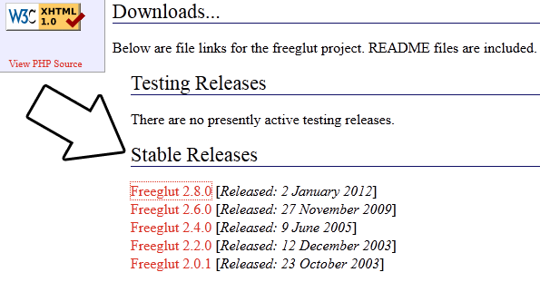

Setting up freeGLUT in Mac OS X Lion
Last Updated 9/08/12
FreeGLUT doesn't have any prebuild frameworks we can use with the OS X compilers. Fortunately, Mac OS X is a type of Unix and we can use unix commands to get it to build and
install freeGLUT on OS X. Unfortunatey, OS X has some quirks we need to deal with.
1) The first issue is that newer versions of OS X don't have X11. You'll have to install XQuartz, a quartz based port of X.org. Download the dmg and install it.
2) Download the latest source from the freeGLUT website.
Extract the archive, open a terminal window, cd to the extracted folder.
3) Configure the installation using this command in the extracted folder
4) In freeGLUT 2.8.0 there's a bug in the source code that causes to break in OS X. In the freeGLUT source directory you extracted go to progs -> demos -> smooth_opengl3 and open up smooth_openg13.c.
Between lines 101 and 102 there's a bunch type definitions that are already in glext.h that cause a conflict.
1) The first issue is that newer versions of OS X don't have X11. You'll have to install XQuartz, a quartz based port of X.org. Download the dmg and install it.
2) Download the latest source from the freeGLUT website.

Extract the archive, open a terminal window, cd to the extracted folder.
3) Configure the installation using this command in the extracted folder
env CPPFLAGS="-I/opt/X11/include" LDFLAGS="-L/opt/X11/lib" ./configure
When you installed XQuartz, it installs X11 to /opt/X11/lib. This command configures the build and tells it to look in /opt/X11/include for headers and /opt/X11/lib for library files.4) In freeGLUT 2.8.0 there's a bug in the source code that causes to break in OS X. In the freeGLUT source directory you extracted go to progs -> demos -> smooth_opengl3 and open up smooth_openg13.c.
Between lines 101 and 102 there's a bunch type definitions that are already in glext.h that cause a conflict.
typedef void (APIENTRY *PFNGLGENBUFFERSPROC) (GLsizei n, GLuint *buffers);
typedef void (APIENTRY *PFNGLBINDBUFFERPROC) (GLenum target, GLuint buffer);
typedef void (APIENTRY *PFNGLBUFFERDATAPROC) (GLenum target, ourGLsizeiptr size, const GLvoid *data, GLenum usage);
typedef GLuint (APIENTRY *PFNGLCREATESHADERPROC) (GLenum type);
typedef void (APIENTRY *PFNGLSHADERSOURCEPROC) (GLuint shader, GLsizei count, const ourGLchar **string, const GLint *length);
typedef void (APIENTRY *PFNGLCOMPILESHADERPROC) (GLuint shader);
typedef GLuint (APIENTRY *PFNGLCREATEPROGRAMPROC) (void);
typedef void (APIENTRY *PFNGLATTACHSHADERPROC) (GLuint program, GLuint shader);
typedef void (APIENTRY *PFNGLLINKPROGRAMPROC) (GLuint program);
typedef void (APIENTRY *PFNGLUSEPROGRAMPROC) (GLuint program);
typedef void (APIENTRY *PFNGLGETSHADERIVPROC) (GLuint shader, GLenum pname, GLint *params);
typedef void (APIENTRY *PFNGLGETSHADERINFOLOGPROC) (GLuint shader, GLsizei bufSize, GLsizei *length, ourGLchar *infoLog);
typedef void (APIENTRY *PFNGLGETPROGRAMIVPROC) (GLenum target, GLenum pname, GLint *params);
typedef void (APIENTRY *PFNGLGETPROGRAMINFOLOGPROC) (GLuint program, GLsizei bufSize, GLsizei *length, ourGLchar *infoLog);
typedef GLint (APIENTRY *PFNGLGETATTRIBLOCATIONPROC) (GLuint program, const ourGLchar *name);
typedef void (APIENTRY *PFNGLVERTEXATTRIBPOINTERPROC) (GLuint index, GLint size, GLenum type, GLboolean normalized, GLsizei stride, const GLvoid *pointer);
typedef void (APIENTRY *PFNGLENABLEVERTEXATTRIBARRAYPROC) (GLuint index);
typedef GLint (APIENTRY *PFNGLGETUNIFORMLOCATIONPROC) (GLuint program, const ourGLchar *name);
typedef void (APIENTRY *PFNGLUNIFORMMATRIX4FVPROC) (GLint location, GLsizei count, GLboolean transpose, const GLfloat *value);
All you have to do is sandwich it in some ifdef macros to make it stop complaining.
#ifndef __glext_h_
typedef void (APIENTRY *PFNGLGENBUFFERSPROC) (GLsizei n, GLuint *buffers);
typedef void (APIENTRY *PFNGLBINDBUFFERPROC) (GLenum target, GLuint buffer);
typedef void (APIENTRY *PFNGLBUFFERDATAPROC) (GLenum target, ourGLsizeiptr size, const GLvoid *data, GLenum usage);
typedef GLuint (APIENTRY *PFNGLCREATESHADERPROC) (GLenum type);
typedef void (APIENTRY *PFNGLSHADERSOURCEPROC) (GLuint shader, GLsizei count, const ourGLchar **string, const GLint *length);
typedef void (APIENTRY *PFNGLCOMPILESHADERPROC) (GLuint shader);
typedef GLuint (APIENTRY *PFNGLCREATEPROGRAMPROC) (void);
typedef void (APIENTRY *PFNGLATTACHSHADERPROC) (GLuint program, GLuint shader);
typedef void (APIENTRY *PFNGLLINKPROGRAMPROC) (GLuint program);
typedef void (APIENTRY *PFNGLUSEPROGRAMPROC) (GLuint program);
typedef void (APIENTRY *PFNGLGETSHADERIVPROC) (GLuint shader, GLenum pname, GLint *params);
typedef void (APIENTRY *PFNGLGETSHADERINFOLOGPROC) (GLuint shader, GLsizei bufSize, GLsizei *length, ourGLchar *infoLog);
typedef void (APIENTRY *PFNGLGETPROGRAMIVPROC) (GLenum target, GLenum pname, GLint *params);
typedef void (APIENTRY *PFNGLGETPROGRAMINFOLOGPROC) (GLuint program, GLsizei bufSize, GLsizei *length, ourGLchar *infoLog);
typedef GLint (APIENTRY *PFNGLGETATTRIBLOCATIONPROC) (GLuint program, const ourGLchar *name);
typedef void (APIENTRY *PFNGLVERTEXATTRIBPOINTERPROC) (GLuint index, GLint size, GLenum type, GLboolean normalized, GLsizei stride, const GLvoid *pointer);
typedef void (APIENTRY *PFNGLENABLEVERTEXATTRIBARRAYPROC) (GLuint index);
typedef GLint (APIENTRY *PFNGLGETUNIFORMLOCATIONPROC) (GLuint program, const ourGLchar *name);
typedef void (APIENTRY *PFNGLUNIFORMMATRIX4FVPROC) (GLint location, GLsizei count, GLboolean transpose, const GLfloat *value);
#endif
5)
Then in the terminal enter the make command (make sure the terminal is in the directory you extracted)
make all
Now using root privileges, install the library with the command:sudo make install
6) Now that you've installed the development libraries, it's time to start up your IDE/compiler.| Select Your IDE/Compiler | |
| XCode 4.4 | |
| Command Line | |
| Back | |